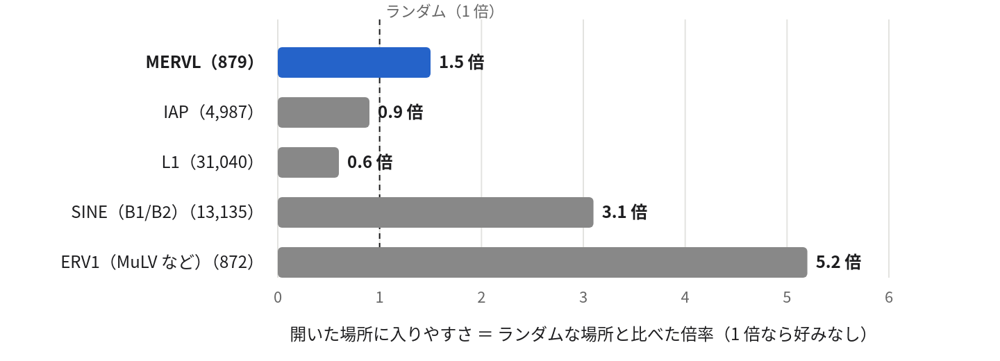

開いた場所に入りやすいから、種ごとに入れ替わる？
最初に立てた仮説は「2 細胞期に働くレトロトランスポゾンは、2 細胞期に開いている領域に入りやすい。だから種ごとに、2 細胞期に最も活発なものに入れ替わる」でした。マウスの系統の違いを使って、これを確かめました。
前半は支持されない
MERVL は、2 細胞期に開いた場所も、既存のレトロトランスポゾンの近くも、強くは選ばずに入っていた。



どう解析したか
- マウス 20 系統の長い読みのゲノム比較（Ferraj ら 2023）から、基準系統 B6 にない挿入を集め、挿入配列をレトロトランスポゾンの配列と照合して種類を決めた（MERVL は 879 か所）。
- ATAC-seq（開いたクロマチンの地図、GSE66581）の胚は B6×DBA の掛け合わせ。B6 にも DBA にもない挿入だけを使ったので、その場所はこの胚では「まだ入っていない空き地」になる。
- 空き地が 2 細胞期の ATAC-seq のピークに入る割合を、ランダムに選んだ 2 万か所と比べた（Fisher の正確検定）。


入った後の MERVL のコピーは 55〜68% が 2 細胞期に開いていました（入る前の場所は 1%）。ただし同じ場所の前後を比べたものではないので、「MERVL が入って場所を開いた」とまでは言えません。図 7 と図 9 で MERVL の数が違うのは、図 7 だけ「DBA にもない」という条件を足したためです。
次の問い
では、なぜ入れ替わるのか
入る場所では説明できませんでした。そこで、「入れ替わり」そのものを下剋上進化仮説の言葉で分けて調べ直しました。古いものが衰える理由（③）と、新しいものがどこから来てなぜ勝ったか（④・⑤）です。